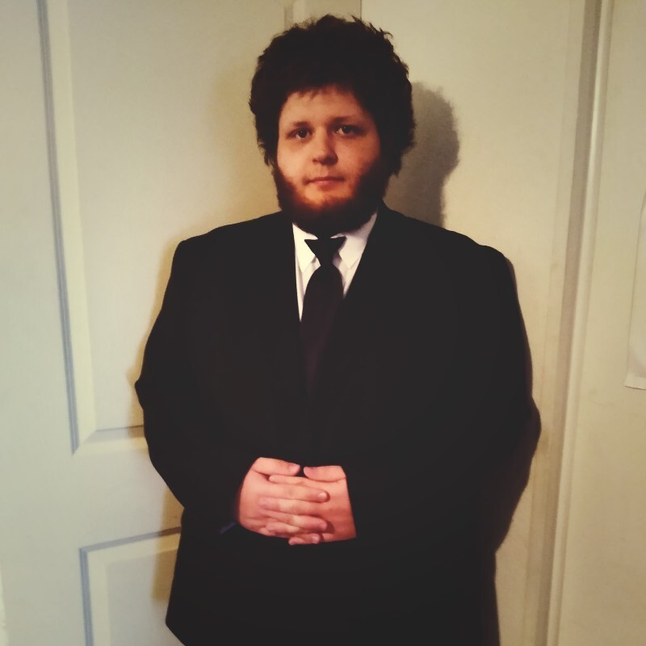
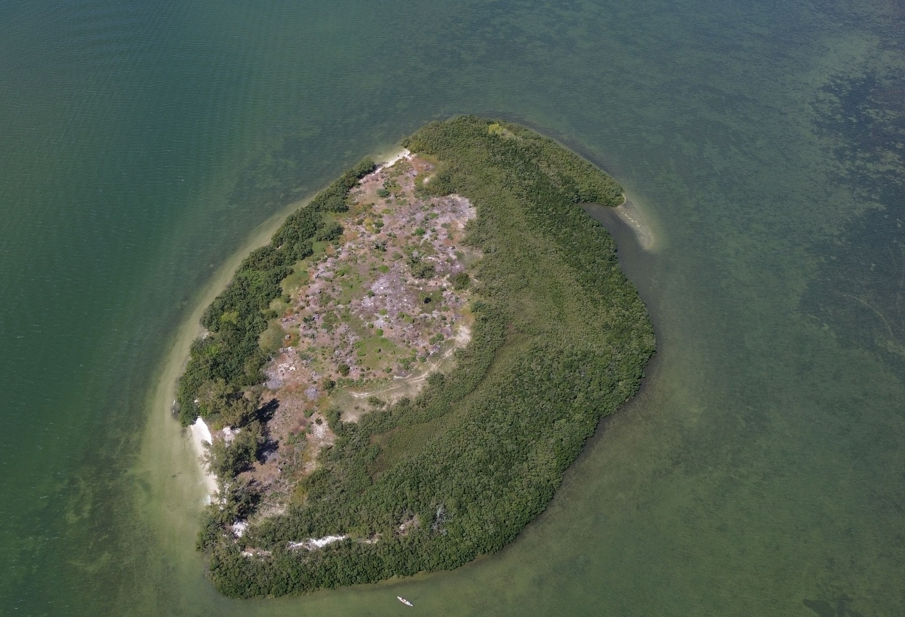
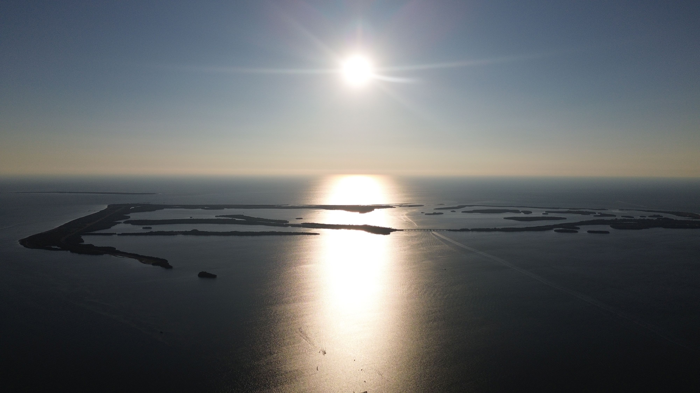

Software Engineer II - Tampa Bay, Florida
Enterprise Systems
Product Builds
Applied Research
Dependable software for enterprise systems, product builds, and research prototypes.
I'm Jody Rutter, a software engineer with experience spanning legacy payment processing, web and mobile product development, and research-driven interfaces. I enjoy making complex systems understandable, maintainable, and ready for real use.
- Current focus: C, SQL, Splunk, and release support in a legacy payments environment.
- Previous work in React Native, ASP.NET, Unity, Firebase, MySQL, and applied prototyping.
- B.S. in Computer Science from the University of South Florida.

Professional Snapshot
Hands-on engineer with range.
From enterprise support and production validation to mobile apps and research prototypes, I work comfortably where reliability matters.
Current Direction
Engineering for systems that have to hold up.
Core Stack
C, SQL, Splunk, JavaScript, React, ASP.NET, Unity
What I Bring
Cross-stack judgment.
I have shipped work in enterprise environments, freelanced on product builds, and collaborated in research settings. That mix helps me move between code, debugging, communication, and delivery without losing the bigger picture.
Technical Range
Java
C
C++
C#
JavaScript
Python
React
React Native
ASP.NET
Unity
Firebase
MySQL
AWS
Linux
SQL
Splunk
How I Work
Clear communication, steady execution.
I like pairing strong technical delivery with practical communication. Whether I'm learning a legacy stack, fixing bugs, or supporting releases, I aim to keep the work accurate, calm, and useful to the people around me.
Career Snapshot
Reliable in production, comfortable in product, curious in research.
My path has moved from student research and mobile product work into enterprise software where careful releases and calm debugging matter. That mix gives me a practical range: I can think about users, shipping pressure, and technical reality at the same time.
Experience
Career path
A mix of enterprise engineering, consulting, freelance product work, and university research shaped the way I approach software.
Projects
Selected work from GitHub
These projects show different sides of my background, from practical product work to research-oriented builds and lower-level programming.
More Repositories
Public GitHub archive
Playable Work
Freedom Flight, now playable on the site
One of my earlier game builds now has a home inside the portfolio. The page keeps the personality of the original project while making it easy to launch, share, and revisit directly in the browser.
Featured Game
Freedom Flight
An arcade-style HTML5 game exported from Construct and embedded directly into this GitHub Pages portfolio so visitors can actually play it, not just read about it.
- Runs entirely in the browser with no install required.
- Hosted as a static build inside the portfolio repo.
- Framed as part of the same body of work as my software and photography.
HTML5 Build
What Changed
The original export now lives on-site as a playable browser game.
Beyond The Editor
Drone photography keeps perspective in the process.
Software is my profession, but aerial photography is another way I study systems, patterns, and composition. It is a different medium, though it scratches a familiar itch: noticing structure, adjusting for constraints, and trying to make complexity legible.


Contact
Let's connect.
If you'd like to talk about software engineering, product work, or collaboration, I'm easy to reach.